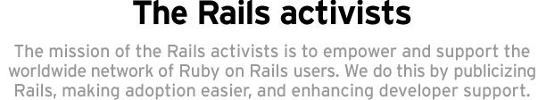
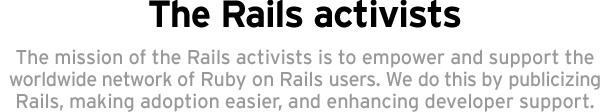

Looking
to help?
We have a long list of initiatives to help improve Rails, but we can't do it alone. If you have ideas on how to improve the Rails ecosystem or you need to get in touch with us, please use one of the three methods below.
Suggest
& vote
Note that while suggestions are great, the real power lies in doing. So just because you suggested something, it doesn't necessarily mean it'll just get done. The suggestion box is in place to get a feedback from the community not as a task list.
Join the discussion
If you have an idea to help Rails Activism, feel free to discuss it on the Rails Activism mailing list. If you'd like some help promoting Rails to your company or local community, here's where you can ask for help. Lastly, feel free to post information about good Rails events, tutorials, or screencasts.
Contact us
If the mailing list is feeling too public, then feel free to contact one of us through our Twitter accounts.

Who we are
The Rails activists are people from the community who've gracefully made it their mission to help coordinate all the activism efforts. They are:

Matt Aimonetti (mattetti) runs m|a agile, a consulting shop offering training, auditing and development for Ruby projects. Matt contributes to Rails and was part of the Merb Core Team, where he lead the evangelism initiative. In his spare time he works as a technical book reviewer, blogs and works on open source books.

Gregg Pollack works at Envy Labs, where he produces a podcast, creates educational screencasts, and develops websites with Rails. He also runs the Ruby Hero Awards, organizes the Orlando Ruby Users Group, and is also sometimes known as the Ruby on Rails guy in the "Rails vs" commercials or the "C" in MVC.

Ryan Bates has been involved in web development since 1998. In 2005 he started working professionally with Ruby on Rails and is now best known for his work on Railscasts, the free Ruby on Rails screencast series. Ryan recently revamped the Weblog in 15 minutes video which can be seen on the Screencasts page of this website.